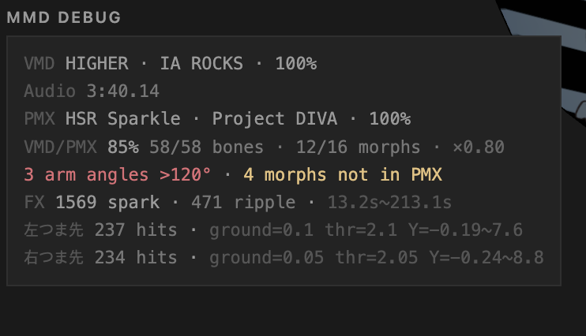
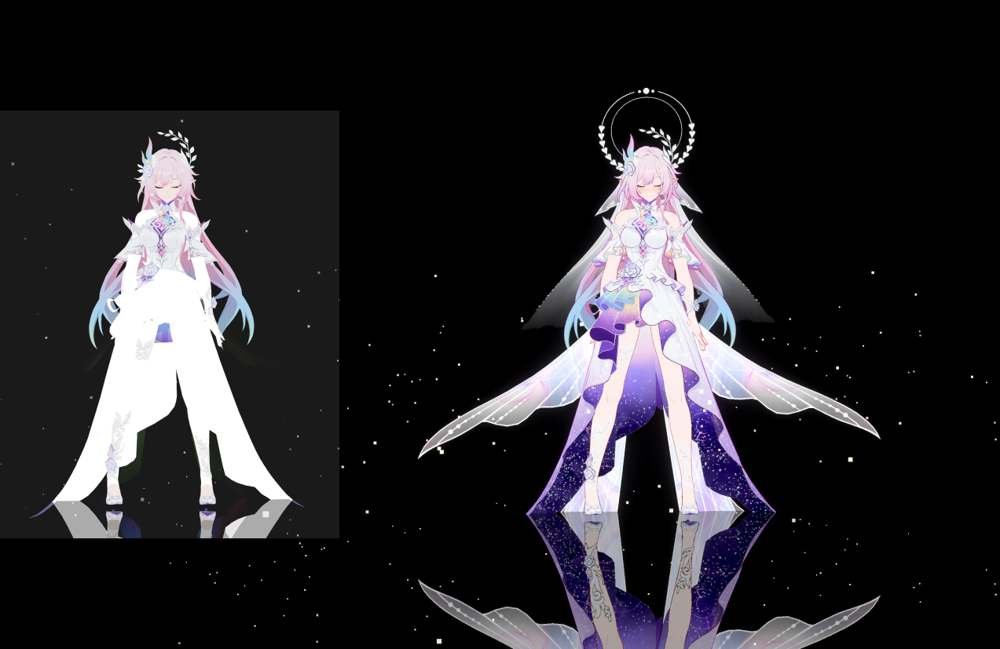
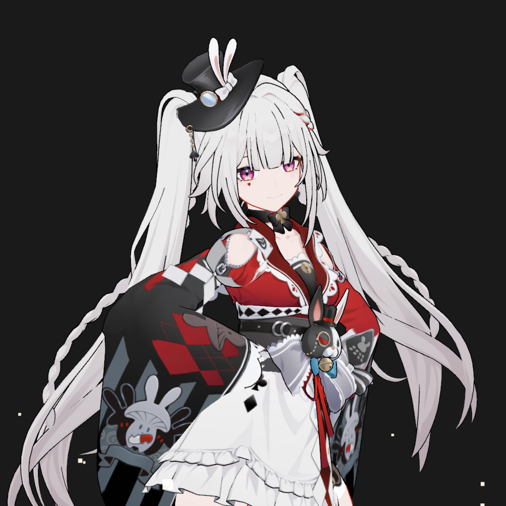
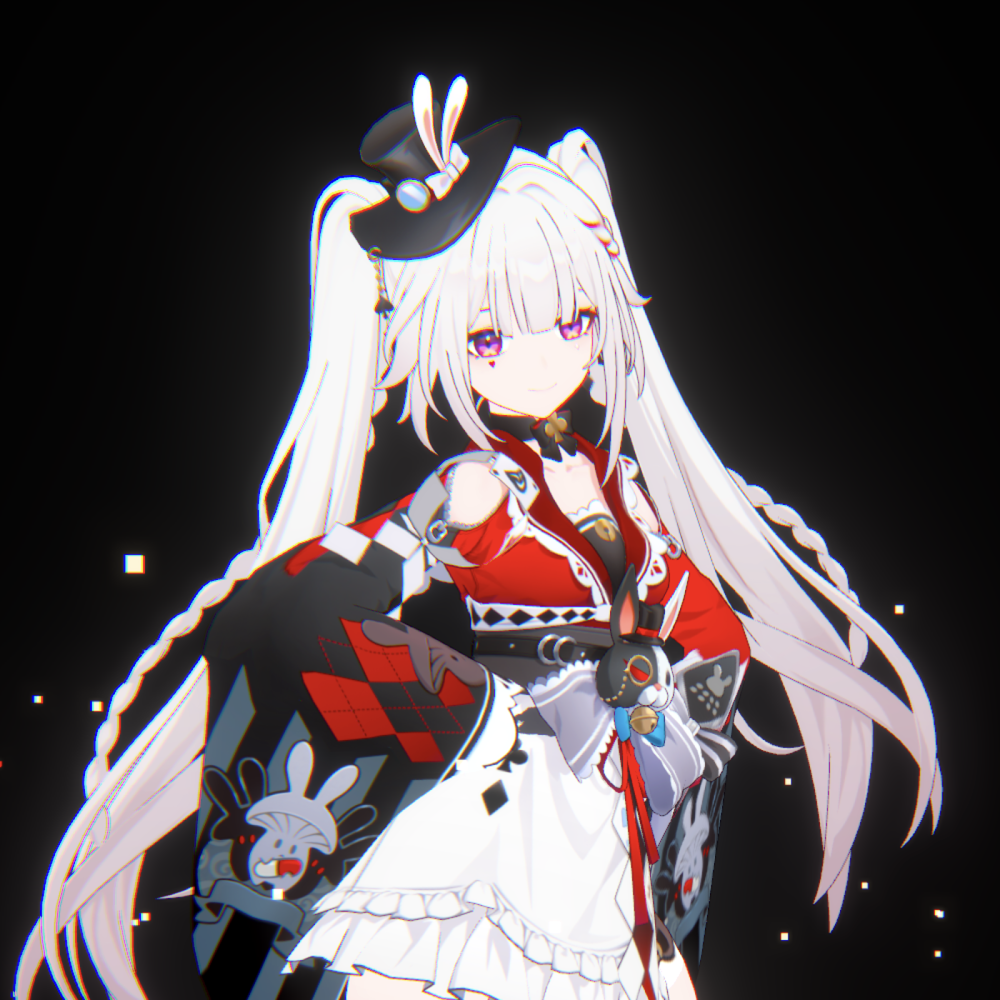
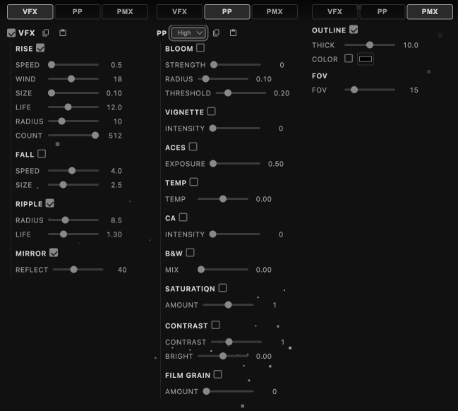

MMD Player
WebGPU MMD viewer with motion-synced effects
Side Project · Three.js WebGPU · TSL Shader · JavaScript · tomlim2.github.io/mmd-anju
Motivation
Started as a source verifier for the PMX-to-VRM conversion pipeline. I needed a tool to verify that the original model and motion work correctly before conversion. The key challenge was distinguishing whether import failures were caused by the original PMX or the VRM converter — if the PMX itself has missing textures or absent bones, it is not a converter issue.
Target users: planners and QA — not just TAs, but non-developer roles who can open and verify directly.
Solution
Building the viewer required solving three things: automatically determining if a motion works on a given model, reproducing PMX materials on the web, and making it visually intuitive when sharing with planning teams.
Automatic Motion Compatibility Analysis
Analyzes VMD motion files to calculate bone match rates against PMX models, and automatically detects IK conflicts and source model families. Game studio PMX models also follow these families — e.g., Honkai: Star Rail uses the DIVA family, Genshin Impact uses the ミリシタ family.

Bone compatibility analysis
| Family | Characteristics |
|---|---|
| あにまさ式 (Animasa) | Default MMD model, minimal bone set (~30) |
| TDA式 | Includes semi-standard bones (上半身2, 腕捩, etc.) |
| YYB式 | TDA-based + extended auxiliary bones |
| にがもん式 | Compact bone set, non-Vocaloid characters |
| つみだんご式 | High-density custom bones (325), 50 expressions |
| ミリシタ | Romanized bone names, incompatible with standard VMD |
Motion-synced Effects — Precompute Experiment
Precompute experiment: derive vector fields and effect timing from VMD motion data on the CPU. Lightweight, no real-time analysis needed. Built as a POC to show planning and client teams that "it moves well."
6 types: Foot Ripple, Spark Burst, Ground Reflect, Falling/Rising Light, Velocity Effect
Motion-synced bloom and particles
TSL Toon Shading — PMX Material Conversion
PMX matcap + additive overlay + alpha converted to TSL MeshBasicNodeMaterial. On this model, textureSample() was called 2–3 times per fragment for the same texture — cached the node once and reused it. Also pulled opacity out of Fn() to fix a bug where materials went invisible in the reflector pass.

Before — alpha ignored, white fill / After — additive overlay + transparency
Post-Process Pipeline — TSL Node Graph
Post-process stack on TSL nodes: bloom, ACES tone mapping, saturation, contrast, color temperature, film grain, vignette. Each effect has its own uniform so they can be toggled independently at runtime.
The pipeline builds two output chains that share the same uniforms but split at bloom. Turning bloom off swaps the output node — the GPU never runs the downsample+blur passes, not just at strength 0 but actually gone from the graph. When the whole PP is off, it falls back to the renderer's tone mapping directly.

Before — Raw render

After — ACES, CA, contrast, grain
Result
| Category | Result |
|---|---|
| Source Verification | Distinguishes PMX issues vs converter issues — directly used by planners/QA |
| Motion Verification | Supports 6 model families, automatic bone match rate/IK conflict detection |
| Effect Precompute | 6 types — POC for convincing planning/client teams |
| Post-Process | Dual chain bloom skip, lazy init, renderer bypass — laptop doesn't cook anymore |
| Tech Validation | WebGPU + TSL shaders in a real project |
| Status | Active — next: physics bone simulation (rigid body + joint), gaussian splatting background |

Real-time FX controls — VFX (particles, mirror), Post-Process (bloom, ACES, CA, grain), PMX (outline, FOV)